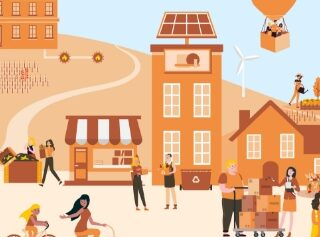
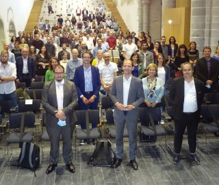
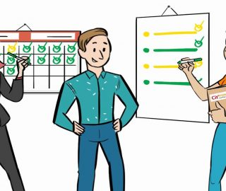
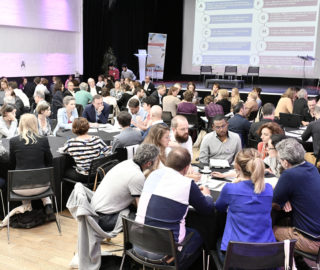

×
ABONNEZ-VOUS à la newsletter
5 septembre 2023
Pour une gestion durable des forêts avec Territoire Engagé Transition Écologique
4 juillet 2023
Le rôle stratégique du Schéma Régional d’Aménagement, de Développement Durable et d’Égalité des Territoires (SRADDET) dans la transition écologique
27 juin 2023
3 nouvelles collectivités labellisées Territoire Engagé Économie Circulaire
27 juin 2023
Découvrez les nouveautés de la plateforme Territoires en Transitions pour piloter vos plans d’actions !
27 juin 2023
Comprendre les réseaux de chaleur urbains : un outil puissant pour la transition énergétique
20 juin 2023
La Journée Nationale des Collectivités à Toulouse les 13 et 14 septembre 2023 : un événement prometteur pour l’inspiration et la collaboration
8 juin 2023
44 collectivités reçoivent leur label à Bordeaux
16 mai 2023
Territoires en Transitions : L’outil de pilotage clé pour la transition écologique des collectivités
5 mai 2023
Le mot de la Direction Régionale de l’ADEME en Guadeloupe, par Marianna MARTEL, Coordinatrice pôle Territoire Durable et accompagnement des Politiques Publiques
28 avril 2023
Les Commissions Nationales des Labels Territoire Engagé Économie Circulaire et Territoire Engagé Climat – Air – Énergie se sont réunies en mars et avril 2023
19 avril 2023
39 nouveaux conseillers TERRITOIRE ENGAGE TRANSITION ÉCOLOGIQUE formés entre novembre 2022 et mars 2023
5 avril 2023
Journée Nationale des Collectivités le 14 septembre 2023 à Toulouse
5 avril 2023
Découvrez le parcours de formation du programme Territoire Engagé Transition Écologique
7 mars 2023
Participez à l’enquête de satisfaction Territoire Engagé Transition Écologique
12 janvier 2023
Webinaire-Démarches territoriales de sobriété : quels retours d’expérience et comment agir ?
12 janvier 2023
Réduction des émissions de Gaz à Effet de Serre : les exemples de 3 collectivités labellisées Climat – Air – Énergie
10 janvier 2023
Les Commissions Nationales des Labels Territoire Engagé Économie Circulaire et Territoire Engagé Climat – Air – Énergie se sont réunies fin 2022

2 décembre 2022
Collectivités, participez au webinaire Territoire Engagé Transition Écologique !
18 novembre 2022
Le mot de la Direction Régionale de l’ADEME en Occitanie, par Céline VACHEY, Directrice Régionale
3 octobre 2022
Territoire Engagé Transition Écologique lance son parcours e-learning pour les collectivités !
3 octobre 2022
L’Intracting des collectivités territoriales : retours d’expérience sur un dispositif de financement interne pluriannuel des actions Climat-Air-Energie
28 septembre 2022
Forum ouvert, remise des labels : retour sur la JNC 2022
27 septembre 2022
Pour vous, quel a été le levier de passage à l’action pour mener une politique ambitieuse de soutien à la rénovation ? par la Métropole et la Ville de Rennes
26 septembre 2022
Le mot de la Direction Régionale de l’ADEME en Normandie, par Fabrice Legentil
20 septembre 2022
J-2 pour la Journée Nationale des Collectivités TERRITOIRE ENGAGÉ TRANSITION ECOLOGIQUE à Lyon !
9 septembre 2022
Universités de l’Economie de la Fonctionnalité et de la Coopération, les 6 et 7 octobre 2022 à la Cité du Design, Saint-Etienne
11 juillet 2022
Comment décrocher la 1ère étoile des labels CLIMAT – AIR – ENERGIE et ECONOMIE CIRCULAIRE en autonomie.
6 juillet 2022
Les Commissions Nationales des Labels Territoire Engagé Économie Circulaire et Territoire Engagé Climat-Air-Énergie se sont réunies en juin
26 juin 2022
PCAET et démarche Territoire Engagé Transition Ecologique (CLIMAT – AIR – ÉNERGIE), un duo gagnant
14 juin 2022
Pour vous, quel a été le levier de passage à l’action ? par la Communauté d’Agglomération le Grand Chalon
7 juin 2022
Le mot de la Direction Régionale de l’ADEME en Bretagne, par Jean-Noël GUERRE, directeur
5 mai 2022
Coup de projecteur sur le programme Territoire Engagé Transition Ecologique aux Assises de la Transition énergétiques 2022 (31 mai – 2 juin)
15 avril 2022
La Journée nationale des collectivités 2022 aura lieu le jeudi 22 septembre à Lyon !
23 mars 2022
Le Havre soutient l’utilisation durable des forêts et des espaces boisés.
22 mars 2022
Clermont-Ferrand met en place une évaluation socio-environnementale d’une programmation pluriannuelle d’investissement.
17 mars 2022
La métropole de Grenoble met en place un système de mobilité durable.
9 février 2022
Développez votre mobilité durable avec les aides de l’ADEME : AVELO2.
14 janvier 2022
22 nouveaux conseillers TERRITOIRE ENGAGE CLIMAT – AIR – ENERGIE formés en 2021.
17 décembre 2021
Pour vous, quel a été le levier de passage à l’action ? par la Ville de Lorient.
14 décembre 2021
Le mot de la Direction Régionale de l’ADEME Grand-Est, par Jérôme BETTON, directeur régional ADEME Grand-Est.
7 décembre 2021
La Commission Nationale du Label Territoire Engagé Climat-Air-Énergie s’est réunie le 16 novembre.
6 décembre 2021
EDITO par Johanna ROLLAND, Maire de Nantes et Présidente de Nantes Métropole.
8 novembre 2021
Webinaire « Schéma Directeur des Énergies », le 18/11 avec ADEME et GRDF.
13 octobre 2021
Live LinkedIn sur le programme Territoire Engagé Transition Ecologique.
22 septembre 2021
Les collectivités récompensées au Palais Brongniart pour leurs politiques Climat – Air – Énergie et Économie Circulaire.
20 septembre 2021
Pour vous, quel a été le levier de passage à l’action ? par Métropole Toulouse
20 septembre 2021
Le mot de la Direction Régionale de l’ADEME Bourgogne-Franche-Comté, par Blandine Aubert, Directrice régionale de l’ADEME Bourgogne Franche-Comté Territoire Engagé Transition Écologique et Cit’ergie Start, accélérateurs de la transition écologique en Bourgogne-Franche-Comté !
10 septembre 2021
EDITO par Philippe-Emmanuel CAILLÉ, 1er adjoint au maire de Bois-Guillaume, en charge de la transition écologique et énergétique

30 juin 2021
Retour sur la 10ème Journée des Collectivités Cit’ergie
23 juin 2021
Pour vous, quel a été le levier de passage à l’action ? par Dijon Métropole
23 juin 2021
EDITO par Glen DISSAUX, conseiller Municipal de la Ville de Brest, Vice-Président délégué au plan climat, air, énergie territorial de Brest métropole
17 juin 2021
Accompagner la résilience des territoires face aux changements climatiques
10 juin 2021
Évolution du référentiel Cit’ergie – version 2021
28 mai 2021
10ème Journée des Collectivités Cit’ergie
13 avril 2021
Journée Nationale des Collectivités Cit’ergie le 29 juin 2021
19 mars 2021
Regard sur l’Europe … ville de Bolzano (Italie)
5 mars 2021
Retours d’expérience Cit’ergie : 2 Fiches Action Exemplaire dans les domaines 3 et 4
5 mars 2021
La Commission Nationale du Label s’est réunie le 24 février
2 mars 2021
Chiffre clé : 30 %
2 mars 2021
Pour vous, quel a été le levier de passage à l’action ? Réalisation d’un Schéma Directeur du Patrimoine Immobilier (mesure 2.1.2.), par Saint-Nazaire
2 mars 2021
Échirolles : retour d’expérience Cit’ergie
20 janvier 2021
Gudrun Heute-Bluhm, nouvelle présidente de l’Association European Energy Award
12 janvier 2021
12 nouvelles collectivités récompensées pour leur politique climat – air – énergie ambitieuse et 16 nouvelles collectivités dans le réseau Cit’ergie !
7 janvier 2021
Cit’ergie aux Assises Européennes de la Transition énergétique
4 janvier 2021
Retours d’expérience Cit’ergie : 6 Fiches Action Exemplaire dans les domaines 1, 2, 3, 4 et 6
21 décembre 2020
Webinaire « Renforcer l’implication des élus et des DGS dans Cit’ergie – Méthodologie de l’accompagnement au changement de comportement ».
18 décembre 2020
Échirolles et Lorient, deux collectivités françaises lauréates 2020 European Energy Award Gold
26 novembre 2020
La Commission Nationale du Label s’est réunie le 17 novembre
18 novembre 2020
WEBINAIRE RÉGIONAL BOURGOGNE-FRANCHE-COMTÉ
13 novembre 2020
36ème newsletter Cit’ergie
23 octobre 2020
Le programme de management et de labellisation Cit’ergie vous est présenté en vidéo
6 juillet 2020
7 dossiers de candidature étudiés à la Commission Nationale du label Cit’ergie
15 juin 2020
Synthèse de la 9ème journée nationale des collectivités Cit’ergie
3 juin 2020
Franc succès de la Journée Nationale Cit’ergie 2020
10 février 2020
De plus en plus de collectivités en scène
27 janvier 2020
Programme Cit’ergie aux Assises Européennes de la Transition Energétique à Bordeaux
28 novembre 2019
45 collectivités labellisées en novembre 2019
22 octobre 2019
13 nouveaux conseillers Cit’ergie ont rejoint le réseau
22 octobre 2019
La ville de Grenoble labellisée Cit’ergie GOLD !
10 septembre 2019
Vidéo suite à la Journée nationale Cit’ergie 2019
27 juillet 2019
14 nouveaux labels attribués
25 juin 2019
Rapprochement entre l’EEA et la Convention des Maires
24 mai 2019
145 participants à la Journée Nationale des Collectivités Cit’ergie 2019

10 mai 2019
Devenir conseiller Cit’ergie, promotion 2019 !

2 avril 2019
Thème et grands témoins de la Journée Nationale Cit’ergie 2019
25 janvier 2019
ASSISES 2019 DUNKERQUE : les labellisés 2018 CAP Cit’ergie et Cit’ergie. Découvrez-les
18 décembre 2018
Retrouvez le réseau Cit’ergie aux Assises européennes de la Transition Energétique à Dunkerque
22 novembre 2018
21 nouvelles collectivités labellisées en novembre 2018
17 octobre 2018
Interview Cit’ergie au 7ème Congrès National du Bâtiment Durable à Lyon
9 juillet 2018
Le réseau s’agrandit : douze nouveaux conseillers Cit’ergie
1 juillet 2018
Nouvelle carte des collectivités
21 juin 2018
6 nouveaux labels octroyés lors de la CNL de juin 2018
21 mai 2018
Journée nationale des collectivités Cit’ergie 2018
1 janvier 2018
Joyeux anniversaire Cit’ergie ! 10 ans déjà !